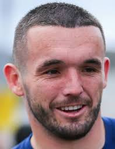

acerca de mi
McGinn comenzó su carrera como juvenil en St Mirren
jugando para la Academia Ralston del club. Ingresó al primer equipo
en la pretemporada de la temporada 2012-13,
representando al
club contra los rivales ingleses Carlisle United y Accrington Stanley.

Nombre
Jhon Mginn
Edad
29 años